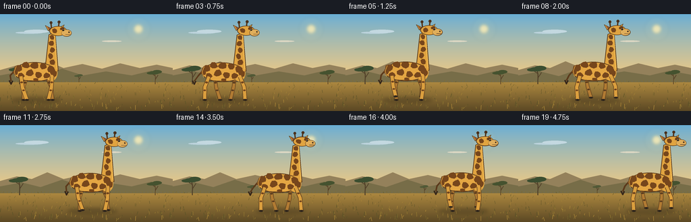
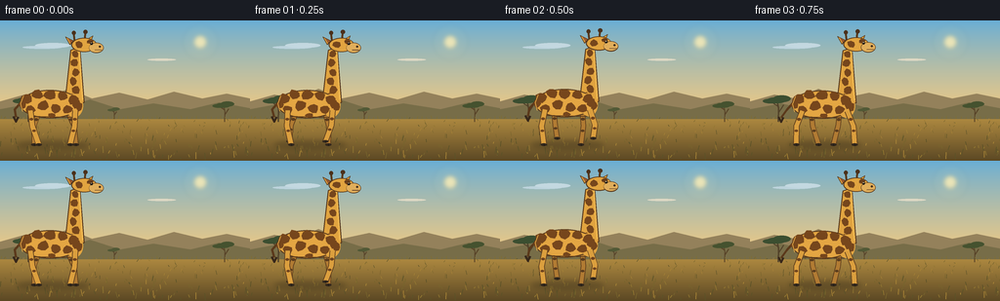

CODING AGENTS AS PIXEL WORLD MODELS
traex/GPT-5.6-Sol · instance_preservation_0010
点击播放 · 原生 RGB 像素
逐轮保存的候选
回放视频、检查图与代码变化。
每份候选均可单独播放。实际图片检查记录在下方工具轨迹中。
候选 01播放与检查图
点击播放 · 原生 RGB 像素


展开代码变化
--- 上一保存版本
+++ 本次保存版本
@@ -0,0 +1,318 @@
+from pathlib import Path
+import math
+import json
+import numpy as np
+from PIL import Image, ImageDraw, ImageFilter
+import artifact_io
+
+CASE_DIR = Path(__file__).resolve().parent
+SPEC = json.loads((CASE_DIR / "task_spec.json").read_text())
+W, H, N, FPS = SPEC["width"], SPEC["height"], SPEC["frames"], SPEC["fps"]
+SS = 4
+SW, SH = W * SS, H * SS
+
+
+def sc(v):
+ return int(round(v * SS))
+
+
+def pts(seq):
+ return [(sc(x), sc(y)) for x, y in seq]
+
+
+def ellipse(draw, box, fill, outline=None, width=1):
+ draw.ellipse(tuple(sc(v) for v in box), fill=fill, outline=outline, width=sc(width) if outline else 1)
+
+
+def polygon(draw, xy, fill, outline=None, width=1):
+ p = pts(xy)
+ draw.polygon(p, fill=fill)
+ if outline:
+ draw.line(p + [p[0]], fill=outline, width=sc(width), joint="curve")
+
+
+def line(draw, xy, fill, width=1, joint="curve"):
+ draw.line(pts(xy), fill=fill, width=sc(width), joint=joint)
+
+
+def smoothstep(x):
+ return x * x * (3 - 2 * x)
+
+
+# Fixed background texture and scene elements. Everything is deterministic.
+rng = np.random.default_rng(72431)
+grass_blades = []
+for _ in range(230):
+ x = float(rng.uniform(0, W))
+ y = float(rng.uniform(100, 143))
+ h = float(rng.uniform(1.2, 5.8) * (0.35 + (y - 98) / 45))
+ lean = float(rng.uniform(-1.6, 1.6))
+ shade = int(rng.integers(0, 4))
+ grass_blades.append((x, y, h, lean, shade))
+
+# Spots are defined in giraffe-local coordinates and therefore remain identical in every frame.
+body_spots = [
+ (-27, 80, 6.0, 5.2, -0.2), (-16, 75.5, 5.8, 4.7, 0.35), (-3, 76, 6.2, 5.0, -0.1),
+ (10, 77, 5.3, 4.5, 0.4), (21, 81, 5.2, 5.0, -0.25), (-23, 91, 5.0, 4.1, 0.15),
+ (-10, 87, 5.8, 5.0, -0.45), (3, 90, 5.2, 4.8, 0.2), (15, 91, 5.1, 4.2, -0.2),
+ (27, 88, 3.4, 4.6, 0.1), (-31, 86, 3.7, 4.1, 0.0), (-1, 97, 4.0, 2.4, 0.0),
+]
+neck_spots = [
+ (23.0, 34, 3.4, 3.8), (21.9, 43, 3.8, 4.2), (23.4, 53, 3.8, 4.0),
+ (20.9, 62, 3.8, 4.4), (23.5, 71, 4.0, 4.5), (20.3, 78, 3.5, 3.9),
+]
+
+
+def irregular_blob(cx, cy, rx, ry, angle=0.0, count=8):
+ out = []
+ for k in range(count):
+ a = 2 * math.pi * k / count
+ mod = 1 + 0.12 * math.sin(k * 2.17 + cx * 0.31 + cy * 0.19)
+ x, y = rx * mod * math.cos(a), ry * mod * math.sin(a)
+ ca, sa = math.cos(angle), math.sin(angle)
+ out.append((cx + x * ca - y * sa, cy + x * sa + y * ca))
+ return out
+
+
+def draw_acacia(draw, x, ground, scale, color, trunk):
+ # forked flat-topped acacia silhouette
+ line(draw, [(x, ground), (x + 0.4 * scale, ground - 20 * scale),
+ (x - 2 * scale, ground - 32 * scale)], trunk, max(1, 2.0 * scale))
+ line(draw, [(x, ground - 13 * scale), (x + 8 * scale, ground - 25 * scale)], trunk, max(1, 1.2 * scale))
+ line(draw, [(x - 1 * scale, ground - 23 * scale), (x - 10 * scale, ground - 29 * scale)], trunk, max(1, 1.1 * scale))
+ # overlapping flattened crowns
+ ellipse(draw, (x - 17 * scale, ground - 36 * scale, x + 11 * scale, ground - 27 * scale), color)
+ ellipse(draw, (x - 8 * scale, ground - 39 * scale, x + 18 * scale, ground - 29 * scale), color)
+ ellipse(draw, (x - 23 * scale, ground - 34 * scale, x - 1 * scale, ground - 27 * scale), color)
+
+
+def make_background(frame_index):
+ # Subtle atmospheric gradient.
+ arr = np.zeros((SH, SW, 3), dtype=np.uint8)
+ top = np.array([104, 174, 214], dtype=float)
+ horizon = np.array([238, 201, 132], dtype=float)
+ earth_top = np.array([188, 148, 69], dtype=float)
+ earth_bottom = np.array([91, 72, 36], dtype=float)
+ horizon_y = sc(93)
+ for yy in range(SH):
+ y = yy / SS
+ if yy < horizon_y:
+ q = y / 93.0
+ q = q ** 0.85
+ col = top * (1 - q) + horizon * q
+ else:
+ q = (y - 93) / (H - 93)
+ col = earth_top * (1 - q) + earth_bottom * q
+ arr[yy, :, :] = np.clip(col, 0, 255).astype(np.uint8)
+ im = Image.fromarray(arr, "RGB")
+ d = ImageDraw.Draw(im)
+
+ # Sun glow and sun, safely behind the animal's path.
+ glow = Image.new("RGBA", (SW, SH), (0, 0, 0, 0))
+ gd = ImageDraw.Draw(glow)
+ for r, alpha in [(18, 8), (13, 13), (9, 20)]:
+ ellipse(gd, (205-r, 22-r, 205+r, 22+r), (255, 231, 161, alpha))
+ ellipse(gd, (199, 16, 211, 28), (255, 239, 182, 205))
+ im = Image.alpha_composite(im.convert("RGBA"), glow.filter(ImageFilter.GaussianBlur(sc(2.0)))).convert("RGB")
+ d = ImageDraw.Draw(im)
+
+ # Quiet cloud streaks.
+ ellipse(d, (23, 26, 63, 29), (188, 211, 220))
+ ellipse(d, (36, 23, 72, 28), (195, 216, 224))
+ ellipse(d, (151, 39, 180, 41.2), (221, 216, 196))
+
+ # Distant layered escarpments.
+ polygon(d, [(0, 83), (25, 76), (47, 80), (70, 70), (94, 80), (122, 74),
+ (151, 81), (178, 73), (207, 80), (232, 75), (256, 80), (256, 98), (0, 98)],
+ (148, 129, 91))
+ polygon(d, [(0, 91), (32, 85), (60, 92), (92, 81), (123, 91), (157, 85),
+ (195, 91), (224, 84), (256, 90), (256, 101), (0, 101)], (119, 109, 72))
+
+ # Distant acacias give unmistakable savanna context.
+ draw_acacia(d, 29, 104, 0.70, (59, 78, 48), (82, 66, 42))
+ draw_acacia(d, 230, 104, 0.54, (69, 82, 47), (88, 67, 40))
+ draw_acacia(d, 117, 101, 0.30, (81, 89, 54), (91, 72, 45))
+
+ # Midground grass line.
+ for x in range(-4, 260, 5):
+ h = 1.8 + 1.4 * (0.5 + 0.5 * math.sin(x * 1.73))
+ col = (126, 111, 53) if x % 10 else (104, 95, 47)
+ line(d, [(x, 101), (x + math.sin(x) * 0.7, 101 - h)], col, 0.7)
+
+ # Foreground fixed texture and grass. Very subtle lateral breeze, not camera motion.
+ sway = 0.55 * math.sin(frame_index * 0.20)
+ palette = [(119, 100, 45), (146, 119, 49), (91, 82, 40), (171, 134, 55)]
+ for x, y, h, lean, shade in grass_blades:
+ width = 0.45 if y < 122 else 0.7
+ line(d, [(x, y), (x + lean + sway * (h / 6), y - h)], palette[shade], width)
+ return im
+
+
+def walk_foot(time_s, phase_offset):
+ u = (time_s * 0.72 + phase_offset) % 1.0
+ stance = 0.62
+ if u < stance:
+ q = u / stance
+ x = 8.5 - 17.0 * q
+ lift = 0.0
+ else:
+ q = (u - stance) / (1.0 - stance)
+ x = -8.5 + 17.0 * smoothstep(q)
+ lift = 7.0 * math.sin(math.pi * q)
+ return x, lift, u
+
+
+def draw_leg(draw, hip_x, hip_y, time_s, phase, near, kind):
+ foot_dx, lift, u = walk_foot(time_s, phase)
+ foot_x = hip_x + foot_dx
+ foot_y = 127.0 - lift
+ # Giraffe knees bend slightly forward on the swing; rear hocks read differently.
+ mid_x = hip_x * 0.45 + foot_x * 0.55
+ if kind == "rear":
+ knee_x = mid_x - 2.7 + 2.2 * (lift / 7.0)
+ else:
+ knee_x = mid_x + 2.0 + 1.4 * (lift / 7.0)
+ knee_y = 108.2 - 0.18 * lift
+ base = (219, 159, 62) if near else (177, 123, 51)
+ edge = (96, 64, 30)
+ spot = (112, 68, 30) if near else (91, 61, 30)
+ # Dark outline under the colored limb improves silhouette at 144p.
+ line(draw, [(hip_x, hip_y), (knee_x, knee_y), (foot_x, foot_y)], edge, 6.2 if near else 5.5)
+ line(draw, [(hip_x, hip_y), (knee_x, knee_y), (foot_x, foot_y)], base, 4.7 if near else 4.0)
+ # Stable markings anchored fractionally along each leg segment.
+ for frac, rad in ((0.28, 2.0), (0.63, 1.75)):
+ if frac < 0.5:
+ f = frac * 2
+ px = hip_x * (1-f) + knee_x * f
+ py = hip_y * (1-f) + knee_y * f
+ else:
+ f = (frac - 0.5) * 2
+ px = knee_x * (1-f) + foot_x * f
+ py = knee_y * (1-f) + foot_y * f
+ ellipse(draw, (px-rad, py-rad*0.65, px+rad, py+rad*0.65), spot)
+ # Black split hoof, aligned horizontally for clear contact.
+ ellipse(draw, (foot_x-3.1, foot_y-1.0, foot_x+3.2, foot_y+1.7), (51, 40, 29))
+ line(draw, [(foot_x + 0.2, foot_y), (foot_x + 0.5, foot_y + 1.4)], (26, 24, 20), 0.65)
+ return foot_x, foot_y, u
+
+
+def draw_giraffe(im, frame_index):
+ d = ImageDraw.Draw(im)
+ t = frame_index / FPS
+ progress = frame_index / (N - 1)
+ cx = 54 + 143 * progress
+ gait_phase = 2 * math.pi * (t * 0.72)
+ bob = 0.8 * math.sin(2 * gait_phase + 0.4)
+ body_y = bob
+
+ # Soft moving shadow under the animal.
+ shadow = Image.new("RGBA", (SW, SH), (0, 0, 0, 0))
+ sd = ImageDraw.Draw(shadow)
+ ellipse(sd, (cx-37, 123.8, cx+37, 131.5), (52, 43, 26, 78))
+ shadow = shadow.filter(ImageFilter.GaussianBlur(sc(2.5)))
+ im.alpha_composite(shadow)
+ d = ImageDraw.Draw(im)
+
+ # Tail behind body, with a lively but restrained pendulum swing.
+ tail_swing = 4.5 * math.sin(gait_phase + 0.8)
+ line(d, [(cx-31, 82+body_y), (cx-39, 91+body_y), (cx-41+tail_swing, 99+body_y)], (91, 57, 27), 2.2)
+ tuft_x, tuft_y = cx - 41 + tail_swing, 100 + body_y
+ line(d, [(tuft_x-2.7, tuft_y-2), (tuft_x, tuft_y+3.7), (tuft_x+2.5, tuft_y-1.5)], (55, 39, 26), 2.0)
+
+ # Far legs first. Offsets make all four legs individually readable.
+ draw_leg(d, cx-14, 93+body_y, t, 0.50, False, "rear")
+ draw_leg(d, cx+15, 93+body_y, t, 0.00, False, "front")
+
+ # Neck mane behind the neck: a row of short, dark serrations.
+ mane_pts = [(cx+15.5, 79+body_y)]
+ for j in range(10):
+ yy = 74 - j * 4.7 + body_y
+ xx = cx + 16.2 + j * 0.55
+ mane_pts.extend([(xx-2.5, yy+1.6), (xx, yy)])
+ mane_pts += [(cx+24.3, 28+body_y), (cx+21, 29+body_y)]
+ polygon(d, mane_pts, (84, 51, 27))
+
+ edge = (86, 55, 27)
+ gold = (225, 164, 64)
+ light = (240, 185, 81)
+ spot_col = (118, 70, 28)
+
+ # Long neck with a slight forward rake.
+ neck = [(cx+12.5, 84+body_y), (cx+18.6, 30+body_y),
+ (cx+27.5, 27+body_y), (cx+32, 84+body_y)]
+ polygon(d, neck, gold, edge, 1.1)
+ # Warm rim light along the sun-facing right edge.
+ line(d, [(cx+27.0, 29+body_y), (cx+30.5, 81+body_y)], (245, 190, 85), 1.2)
+ for sx, sy, rx, ry in neck_spots:
+ polygon(d, irregular_blob(cx+sx, sy+body_y, rx, ry, angle=-0.08, count=7), spot_col)
+
+ # Body silhouette, drawn as overlapping smooth ellipses for a high rump and strong shoulder.
+ ellipse(d, (cx-34, 71+body_y, cx+28, 100+body_y), edge)
+ ellipse(d, (cx-33, 72+body_y, cx+27, 99+body_y), gold)
+ ellipse(d, (cx+13, 75+body_y, cx+31, 99+body_y), gold)
+ # Belly highlight and shoulder shading.
+ ellipse(d, (cx-24, 78+body_y, cx+24, 98+body_y), (228, 166, 67))
+ line(d, [(cx-24, 98+body_y), (cx+20, 99+body_y)], edge, 1.0)
+
+ for sx, sy, rx, ry, ang in body_spots:
+ polygon(d, irregular_blob(cx+sx, sy+body_y, rx, ry, angle=ang, count=8), spot_col)
+ # Shoulder spot and rump contour details.
+ polygon(d, irregular_blob(cx+24, 85+body_y, 4.1, 5.0, 0.1, 7), spot_col)
+ line(d, [(cx-30, 77+body_y), (cx-33, 85+body_y), (cx-31, 93+body_y)], (245, 186, 79), 0.8)
+
+ # Near legs over body edge.
+ draw_leg(d, cx-23, 92+body_y, t, 0.00, True, "rear")
+ draw_leg(d, cx+23, 92+body_y, t, 0.50, True, "front")
+
+ # Head bob is tiny and follows the body to preserve a natural rigid neck.
+ hb = body_y + 0.45 * math.sin(gait_phase + 1.0)
+ # Ossicones and dark tips.
+ line(d, [(cx+22.5, 21+hb), (cx+21.5, 12.5+hb)], edge, 2.0)
+ line(d, [(cx+32.5, 20+hb), (cx+33.5, 11.5+hb)], edge, 2.0)
+ ellipse(d, (cx+19.5, 9.8+hb, cx+23.5, 14.0+hb), (75, 49, 28))
+ ellipse(d, (cx+31.3, 8.8+hb, cx+35.6, 13.0+hb), (75, 49, 28))
+ # Ears: broad pointed side ear plus far ear.
+ polygon(d, [(cx+21, 20+hb), (cx+13, 16+hb), (cx+17.5, 24+hb)], gold, edge, 0.8)
+ polygon(d, [(cx+34, 19+hb), (cx+41, 15+hb), (cx+38, 23+hb)], gold, edge, 0.8)
+ polygon(d, [(cx+20.2, 20.1+hb), (cx+15.2, 17.4+hb), (cx+18.2, 22.3+hb)], (154, 89, 47))
+
+ # Skull and muzzle.
+ ellipse(d, (cx+19, 17+hb, cx+45, 31.5+hb), edge)
+ ellipse(d, (cx+20, 17.8+hb, cx+44.5, 30.7+hb), gold)
+ ellipse(d, (cx+37, 22+hb, cx+52, 32.5+hb), edge)
+ ellipse(d, (cx+37.3, 22.5+hb, cx+51.4, 31.7+hb), (224, 174, 91))
+ # Facial markings, eye, nostril, mouth.
+ polygon(d, irregular_blob(cx+27, 24+hb, 4.1, 3.5, 0.2, 7), spot_col)
+ polygon(d, irregular_blob(cx+38, 20.8+hb, 3.2, 2.5, -0.2, 7), spot_col)
+ ellipse(d, (cx+38.3, 21.5+hb, cx+41.0, 24.2+hb), (31, 25, 20))
+ ellipse(d, (cx+39.0, 21.7+hb, cx+39.8, 22.5+hb), (246, 232, 189))
+ line(d, [(cx+35.5, 20.5+hb), (cx+41.2, 20.7+hb)], (70, 43, 24), 0.8)
+ ellipse(d, (cx+47, 25.0+hb, cx+49.2, 27.0+hb), (66, 46, 30))
+ line(d, [(cx+43, 29.5+hb), (cx+50, 29.4+hb)], (87, 55, 34), 0.8)
+
+ # A few tiny dust puffs just behind the rear hoof during push-off.
+ _, _, rear_u = walk_foot(t, 0.0)
+ if 0.54 < rear_u < 0.74:
+ alpha = int(45 * math.sin(math.pi * (rear_u - 0.54) / 0.20))
+ dust = Image.new("RGBA", (SW, SH), (0, 0, 0, 0))
+ dd = ImageDraw.Draw(dust)
+ for k in range(3):
+ ellipse(dd, (cx-34-k*3, 123-k*1.0, cx-27-k*3, 128+k), (207, 171, 100, alpha))
+ im.alpha_composite(dust.filter(ImageFilter.GaussianBlur(sc(1.2))))
+
+
+def generate():
+ frames = []
+ for i in range(N):
+ frame = make_background(i).convert("RGBA")
+ draw_giraffe(frame, i)
+ # Supersampling delivers clean, cinematic edges while preserving fine spot detail.
+ frame = frame.convert("RGB").resize((W, H), Image.Resampling.LANCZOS)
+ frames.append(np.asarray(frame, dtype=np.uint8))
+ return np.stack(frames, axis=0)
+
+
+if __name__ == "__main__":
+ frames = generate()
+ artifact_io.save(frames, CASE_DIR)
+ print(f"saved {len(frames)} RGB frames at {W}x{H}, {FPS:g} fps")
可观测工具轨迹
实际执行的命令与返回图片。
命令 1exit 0
/bin/bash -lc "cat prompt.txt && printf '\\n--- GENERATION_RULES ---\\n' && cat GENERATION_RULES.md"
命令 2exit 0
/bin/bash -lc "cat task_spec.json && printf '\\n--- FILES ---\\n' && find . -maxdepth 2 -type f -printf '%p\\n' | sort"
命令 3exit 0
/bin/bash -lc 'cat artifact_io.py'
命令 4exit 0
/bin/bash -lc "cat > generate.py <<'PY'
from pathlib import Path
import math
import json
import numpy as np
from PIL import Image, ImageDraw, ImageFilter
import artifact_io
CASE_DIR = Path(__file__).resolve().parent
SPEC = json.loads((CASE_DIR / \"task_spec.json\").read_text())
W, H, N, FPS = SPEC[\"width\"], SPEC[\"height\"], SPEC[\"frames\"], SPEC[\"fps\"]
SS = 4
SW, SH = W * SS, H * SS
def sc(v):
return int(round(v * SS))
def pts(seq):
return [(sc(x), sc(y)) for x, y in seq]
def ellipse(draw, box, fill, outline=None, width=1):
draw.ellipse(tuple(sc(v) for v in box), fill=fill, outline=outline, width=sc(width) if outline else 1)
def polygon(draw, xy, fill, outline=None, width=1):
p = pts(xy)
draw.polygon(p, fill=fill)
if outline:
draw.line(p + [p[0]], fill=outline, width=sc(width), joint=\"curve\")
def line(draw, xy, fill, width=1, joint=\"curve\"):
draw.line(pts(xy), fill=fill, width=sc(width), joint=joint)
def smoothstep(x):
return x * x * (3 - 2 * x)
# Fixed background texture and scene elements. Everything is deterministic.
rng = np.random.default_rng(72431)
grass_blades = []
for _ in range(230):
x = float(rng.uniform(0, W))
y = float(rng.uniform(100, 143))
h = float(rng.uniform(1.2, 5.8) * (0.35 + (y - 98) / 45))
lean = float(rng.uniform(-1.6, 1.6))
shade = int(rng.integers(0, 4))
grass_blades.append((x, y, h, lean, shade))
# Spots are defined in giraffe-local coordinates and therefore remain identical in every frame.
body_spots = [
(-27, 80, 6.0, 5.2, -0.2), (-16, 75.5, 5.8, 4.7, 0.35), (-3, 76, 6.2, 5.0, -0.1),
(10, 77, 5.3, 4.5, 0.4), (21, 81, 5.2, 5.0, -0.25), (-23, 91, 5.0, 4.1, 0.15),
(-10, 87, 5.8, 5.0, -0.45), (3, 90, 5.2, 4.8, 0.2), (15, 91, 5.1, 4.2, -0.2),
(27, 88, 3.4, 4.6, 0.1), (-31, 86, 3.7, 4.1, 0.0), (-1, 97, 4.0, 2.4, 0.0),
]
neck_spots = [
(23.0, 34, 3.4, 3.8), (21.9, 43, 3.8, 4.2), (23.4, 53, 3.8, 4.0),
(20.9, 62, 3.8, 4.4), (23.5, 71, 4.0, 4.5), (20.3, 78, 3.5, 3.9),
]
def irregular_blob(cx, cy, rx, ry, angle=0.0, count=8):
out = []
for k in range(count):
a = 2 * math.pi * k / count
mod = 1 + 0.12 * math.sin(k * 2.17 + cx * 0.31 + cy * 0.19)
x, y = rx * mod * math.cos(a), ry * mod * math.sin(a)
ca, sa = math.cos(angle), math.sin(angle)
out.append((cx + x * ca - y * sa, cy + x * sa + y * ca))
return out
def draw_acacia(draw, x, ground, scale, color, trunk):
# forked flat-topped acacia silhouette
line(draw, [(x, ground), (x + 0.4 * scale, ground - 20 * scale),
(x - 2 * scale, ground - 32 * scale)], trunk, max(1, 2.0 * scale))
line(draw, [(x, ground - 13 * scale), (x + 8 * scale, ground - 25 * scale)], trunk, max(1, 1.2 * scale))
line(draw, [(x - 1 * scale, ground - 23 * scale), (x - 10 * scale, ground - 29 * scale)], trunk, max(1, 1.1 * scale))
# overlapping flattened crowns
ellipse(draw, (x - 17 * scale, ground - 36 * scale, x + 11 * scale, ground - 27 * scale), color)
ellipse(draw, (x - 8 * scale, ground - 39 * scale, x + 18 * scale, ground - 29 * scale), color)
ellipse(draw, (x - 23 * scale, ground - 34 * scale, x - 1 * scale, ground - 27 * scale), color)
def make_background(frame_index):
# Subtle atmospheric gradient.
arr = np.zeros((SH, SW, 3), dtype=np.uint8)
top = np.array([104, 174, 214], dtype=float)
horizon = np.array([238, 201, 132], dtype=float)
earth_top = np.array([188, 148, 69], dtype=float)
earth_bottom = np.array([91, 72, 36], dtype=float)
horizon_y = sc(93)
for yy in range(SH):
y = yy / SS
if yy < horizon_y:
q = y / 93.0
q = q ** 0.85
col = top * (1 - q) + horizon * q
else:
q = (y - 93) / (H - 93)
col = earth_top * (1 - q) + earth_bottom * q
arr[yy, :, :] = np.clip(col, 0, 255).astype(np.uint8)
im = Image.fromarray(arr, \"RGB\")
d = ImageDraw.Draw(im)
# Sun glow and sun, safely behind the animal's path.
glow = Image.new(\"RGBA\", (SW, SH), (0, 0, 0, 0))
gd = ImageDraw.Draw(glow)
for r, alpha in [(18, 8), (13, 13), (9, 20)]:
ellipse(gd, (205-r, 22-r, 205+r, 22+r), (255, 231, 161, alpha))
ellipse(gd, (199, 16, 211, 28), (255, 239, 182, 205))
im = Image.alpha_composite(im.convert(\"RGBA\"), glow.filter(ImageFilter.GaussianBlur(sc(2.0)))).convert(\"RGB\")
d = ImageDraw.Draw(im)
# Quiet cloud streaks.
ellipse(d, (23, 26, 63, 29), (188, 211, 220))
ellipse(d, (36, 23, 72, 28), (195, 216, 224))
ellipse(d, (151, 39, 180, 41.2), (221, 216, 196))
# Distant layered escarpments.
polygon(d, [(0, 83), (25, 76), (47, 80), (70, 70), (94, 80), (122, 74),
(151, 81), (178, 73), (207, 80), (232, 75), (256, 80), (256, 98), (0, 98)],
(148, 129, 91))
polygon(d, [(0, 91), (32, 85), (60, 92), (92, 81), (123, 91), (157, 85),
(195, 91), (224, 84), (256, 90), (256, 101), (0, 101)], (119, 109, 72))
# Distant acacias give unmistakable savanna context.
draw_acacia(d, 29, 104, 0.70, (59, 78, 48), (82, 66, 42))
draw_acacia(d, 230, 104, 0.54, (69, 82, 47), (88, 67, 40))
draw_acacia(d, 117, 101, 0.30, (81, 89, 54), (91, 72, 45))
# Midground grass line.
for x in range(-4, 260, 5):
h = 1.8 + 1.4 * (0.5 + 0.5 * math.sin(x * 1.73))
col = (126, 111, 53) if x % 10 else (104, 95, 47)
line(d, [(x, 101), (x + math.sin(x) * 0.7, 101 - h)], col, 0.7)
# Foreground fixed texture and grass. Very subtle lateral breeze, not camera motion.
sway = 0.55 * math.sin(frame_index * 0.20)
palette = [(119, 100, 45), (146, 119, 49), (91, 82, 40), (171, 134, 55)]
for x, y, h, lean, shade in grass_blades:
width = 0.45 if y < 122 else 0.7
line(d, [(x, y), (x + lean + sway * (h / 6), y - h)], palette[shade], width)
return im
def walk_foot(time_s, phase_offset):
u = (time_s * 0.72 + phase_offset) % 1.0
stance = 0.62
if u < stance:
q = u / stance
x = 8.5 - 17.0 * q
lift = 0.0
else:
q = (u - stance) / (1.0 - stance)
x = -8.5 + 17.0 * smoothstep(q)
lift = 7.0 * math.sin(math.pi * q)
return x, lift, u
def draw_leg(draw, hip_x, hip_y, time_s, phase, near, kind):
foot_dx, lift, u = walk_foot(time_s, phase)
foot_x = hip_x + foot_dx
foot_y = 127.0 - lift
# Giraffe knees bend slightly forward on the swing; rear hocks read differently.
mid_x = hip_x * 0.45 + foot_x * 0.55
if kind == \"rear\":
knee_x = mid_x - 2.7 + 2.2 * (lift / 7.0)
else:
knee_x = mid_x + 2.0 + 1.4 * (lift / 7.0)
knee_y = 108.2 - 0.18 * lift
base = (219, 159, 62) if near else (177, 123, 51)
edge = (96, 64, 30)
spot = (112, 68, 30) if near else (91, 61, 30)
# Dark outline under the colored limb improves silhouette at 144p.
line(draw, [(hip_x, hip_y), (knee_x, knee_y), (foot_x, foot_y)], edge, 6.2 if near else 5.5)
line(draw, [(hip_x, hip_y), (knee_x, knee_y), (foot_x, foot_y)], base, 4.7 if near else 4.0)
# Stable markings anchored fractionally along each leg segment.
for frac, rad in ((0.28, 2.0), (0.63, 1.75)):
if frac < 0.5:
f = frac * 2
px = hip_x * (1-f) + knee_x * f
py = hip_y * (1-f) + knee_y * f
else:
f = (frac - 0.5) * 2
px = knee_x * (1-f) + foot_x * f
py = knee_y * (1-f) + foot_y * f
ellipse(draw, (px-rad, py-rad*0.65, px+rad, py+rad*0.65), spot)
# Black split hoof, aligned horizontally for clear contact.
ellipse(draw, (foot_x-3.1, foot_y-1.0, foot_x+3.2, foot_y+1.7), (51, 40, 29))
line(draw, [(foot_x + 0.2, foot_y), (foot_x + 0.5, foot_y + 1.4)], (26, 24, 20), 0.65)
return foot_x, foot_y, u
def draw_giraffe(im, frame_index):
d = ImageDraw.Draw(im)
t = frame_index / FPS
progress = frame_index / (N - 1)
cx = 54 + 143 * progress
gait_phase = 2 * math.pi * (t * 0.72)
bob = 0.8 * math.sin(2 * gait_phase + 0.4)
body_y = bob
# Soft moving shadow under the animal.
shadow = Image.new(\"RGBA\", (SW, SH), (0, 0, 0, 0))
sd = ImageDraw.Draw(shadow)
ellipse(sd, (cx-37, 123.8, cx+37, 131.5), (52, 43, 26, 78))
shadow = shadow.filter(ImageFilter.GaussianBlur(sc(2.5)))
im.alpha_composite(shadow)
d = ImageDraw.Draw(im)
# Tail behind body, with a lively but restrained pendulum swing.
tail_swing = 4.5 * math.sin(gait_phase + 0.8)
line(d, [(cx-31, 82+body_y), (cx-39, 91+body_y), (cx-41+tail_swing, 99+body_y)], (91, 57, 27), 2.2)
tuft_x, tuft_y = cx - 41 + tail_swing, 100 + body_y
line(d, [(tuft_x-2.7, tuft_y-2), (tuft_x, tuft_y+3.7), (tuft_x+2.5, tuft_y-1.5)], (55, 39, 26), 2.0)
# Far legs first. Offsets make all four legs individually readable.
draw_leg(d, cx-14, 93+body_y, t, 0.50, False, \"rear\")
draw_leg(d, cx+15, 93+body_y, t, 0.00, False, \"front\")
# Neck mane behind the neck: a row of short, dark serrations.
mane_pts = [(cx+15.5, 79+body_y)]
for j in range(10):
yy = 74 - j * 4.7 + body_y
xx = cx + 16.2 + j * 0.55
mane_pts.extend([(xx-2.5, yy+1.6), (xx, yy)])
mane_pts += [(cx+24.3, 28+body_y), (cx+21, 29+body_y)]
polygon(d, mane_pts, (84, 51, 27))
edge = (86, 55, 27)
gold = (225, 164, 64)
light = (240, 185, 81)
spot_col = (118, 70, 28)
# Long neck with a slight forward rake.
neck = [(cx+12.5, 84+body_y), (cx+18.6, 30+body_y),
(cx+27.5, 27+body_y), (cx+32, 84+body_y)]
polygon(d, neck, gold, edge, 1.1)
# Warm rim light along the sun-facing right edge.
line(d, [(cx+27.0, 29+body_y), (cx+30.5, 81+body_y)], (245, 190, 85), 1.2)
for sx, sy, rx, ry in neck_spots:
polygon(d, irregular_blob(cx+sx, sy+body_y, rx, ry, angle=-0.08, count=7), spot_col)
# Body silhouette, drawn as overlapping smooth ellipses for a high rump and strong shoulder.
ellipse(d, (cx-34, 71+body_y, cx+28, 100+body_y), edge)
ellipse(d, (cx-33, 72+body_y, cx+27, 99+body_y), gold)
ellipse(d, (cx+13, 75+body_y, cx+31, 99+body_y), gold)
# Belly highlight and shoulder shading.
ellipse(d, (cx-24, 78+body_y, cx+24, 98+body_y), (228, 166, 67))
line(d, [(cx-24, 98+body_y), (cx+20, 99+body_y)], edge, 1.0)
for sx, sy, rx, ry, ang in body_spots:
polygon(d, irregular_blob(cx+sx, sy+body_y, rx, ry, angle=ang, count=8), spot_col)
# Shoulder spot and rump contour details.
polygon(d, irregular_blob(cx+24, 85+body_y, 4.1, 5.0, 0.1, 7), spot_col)
line(d, [(cx-30, 77+body_y), (cx-33, 85+body_y), (cx-31, 93+body_y)], (245, 186, 79), 0.8)
# Near legs over body edge.
draw_leg(d, cx-23, 92+body_y, t, 0.00, True, \"rear\")
draw_leg(d, cx+23, 92+body_y, t, 0.50, True, \"front\")
# Head bob is tiny and follows the body to preserve a natural rigid neck.
hb = body_y + 0.45 * math.sin(gait_phase + 1.0)
# Ossicones and dark tips.
line(d, [(cx+22.5, 21+hb), (cx+21.5, 12.5+hb)], edge, 2.0)
line(d, [(cx+32.5, 20+hb), (cx+33.5, 11.5+hb)], edge, 2.0)
ellipse(d, (cx+19.5, 9.8+hb, cx+23.5, 14.0+hb), (75, 49, 28))
ellipse(d, (cx+31.3, 8.8+hb, cx+35.6, 13.0+hb), (75, 49, 28))
# Ears: broad pointed side ear plus far ear.
polygon(d, [(cx+21, 20+hb), (cx+13, 16+hb), (cx+17.5, 24+hb)], gold, edge, 0.8)
polygon(d, [(cx+34, 19+hb), (cx+41, 15+hb), (cx+38, 23+hb)], gold, edge, 0.8)
polygon(d, [(cx+20.2, 20.1+hb), (cx+15.2, 17.4+hb), (cx+18.2, 22.3+hb)], (154, 89, 47))
# Skull and muzzle.
ellipse(d, (cx+19, 17+hb, cx+45, 31.5+hb), edge)
ellipse(d, (cx+20, 17.8+hb, cx+44.5, 30.7+hb), gold)
ellipse(d, (cx+37, 22+hb, cx+52, 32.5+hb), edge)
ellipse(d, (cx+37.3, 22.5+hb, cx+51.4, 31.7+hb), (224, 174, 91))
# Facial markings, eye, nostril, mouth.
polygon(d, irregular_blob(cx+27, 24+hb, 4.1, 3.5, 0.2, 7), spot_col)
polygon(d, irregular_blob(cx+38, 20.8+hb, 3.2, 2.5, -0.2, 7), spot_col)
ellipse(d, (cx+38.3, 21.5+hb, cx+41.0, 24.2+hb), (31, 25, 20))
ellipse(d, (cx+39.0, 21.7+hb, cx+39.8, 22.5+hb), (246, 232, 189))
line(d, [(cx+35.5, 20.5+hb), (cx+41.2, 20.7+hb)], (70, 43, 24), 0.8)
ellipse(d, (cx+47, 25.0+hb, cx+49.2, 27.0+hb), (66, 46, 30))
line(d, [(cx+43, 29.5+hb), (cx+50, 29.4+hb)], (87, 55, 34), 0.8)
# A few tiny dust puffs just behind the rear hoof during push-off.
_, _, rear_u = walk_foot(t, 0.0)
if 0.54 < rear_u < 0.74:
alpha = int(45 * math.sin(math.pi * (rear_u - 0.54) / 0.20))
dust = Image.new(\"RGBA\", (SW, SH), (0, 0, 0, 0))
dd = ImageDraw.Draw(dust)
for k in range(3):
ellipse(dd, (cx-34-k*3, 123-k*1.0, cx-27-k*3, 128+k), (207, 171, 100, alpha))
im.alpha_composite(dust.filter(ImageFilter.GaussianBlur(sc(1.2))))
def generate():
frames = []
for i in range(N):
frame = make_background(i).convert(\"RGBA\")
draw_giraffe(frame, i)
# Supersampling delivers clean, cinematic edges while preserving fine spot detail.
frame = frame.convert(\"RGB\").resize((W, H), Image.Resampling.LANCZOS)
frames.append(np.asarray(frame, dtype=np.uint8))
return np.stack(frames, axis=0)
if __name__ == \"__main__\":
frames = generate()
artifact_io.save(frames, CASE_DIR)
print(f\"saved {len(frames)} RGB frames at {W}x{H}, {FPS:g} fps\")
PY
python generate.py"命令 5exit 0
/bin/bash -lc 'command -v chafa || command -v viu || command -v jp2 || true; file frames/00.png frames/10.png frames/19.png inspection.png; du -sh .'
命令 6exit 0
/bin/bash -lc "python - <<'PY'
import numpy as np
from pathlib import Path
from PIL import Image
p=Path('.')
z=np.load('pixels.npz')['pixels']
print('packed tensor',z.shape,z.dtype)
imgs=np.stack([np.asarray(Image.open(f'frames/{i:02d}.png').convert('RGB')) for i in range(20)])
print('frames',imgs.shape,imgs.dtype,'range',imgs.min(),imgs.max())
mad=np.abs(imgs[1:].astype(int)-imgs[:-1].astype(int)).mean((1,2,3))
print('adjacent MAD:',np.round(mad,2).tolist())
print('all outputs:',[(q.name,q.stat().st_size) for q in [p/'pixels.npz',p/'inspection.png',p/'transition_check.png',p/'index.html']])
assert imgs.shape==(20,144,256,3) and imgs.dtype==np.uint8
assert np.all(mad>0.3)
PY"命令 7exit 0
/bin/bash -lc 'python -m py_compile generate.py artifact_io.py && grep -n "artifact_io.save" generate.py'
命令 8exit 0
/bin/bash -lc "ls -l generate.py pixels.npz index.html inspection.png transition_check.png frames/{00,01,10,19}.png && python - <<'PY'
from PIL import Image
for i in (0,1,5,10,15,19):
im=Image.open(f'frames/{i:02d}.png')
print(i, im.mode, im.size)
PY"保存候选 1 份；完成命令 8 次；可验证图片返回 0 张。原始 API 响应与完整日志保留在本地。